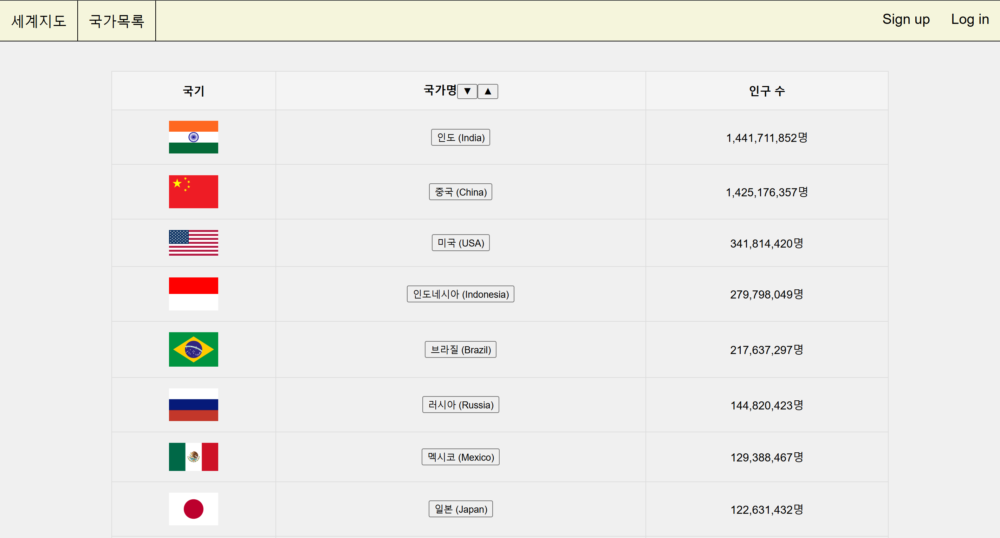
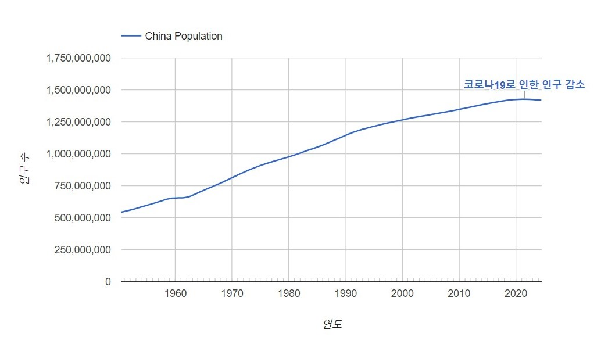

전체 공통
- 네비게이션 바
메인 화면
1. 세계지도 위에 국가별 인구 수를 숫자로 표현하는 모드가 기본
2. 다른 모드로 변경 가능
3. 국가별 페이지로 이동하는 버튼

국가목록 화면
1. 국가 목록이 수직 정렬되서 표현됨
2. 국기, 국가명, 인구 수 등이 표현됨
3. 정렬기능 선택 버튼
국가별 화면
1. 연도에 따른 인구 수 변화 그래프
2. 인구 변화에 영향을 준 주요 사건 링크
회원가입 화면
1. ID, pw, pw확인 입력란
2. 확인 버튼
로그인 화면
1. 이메일(ID), 비밀번호 입력란
2. 로그인 버튼